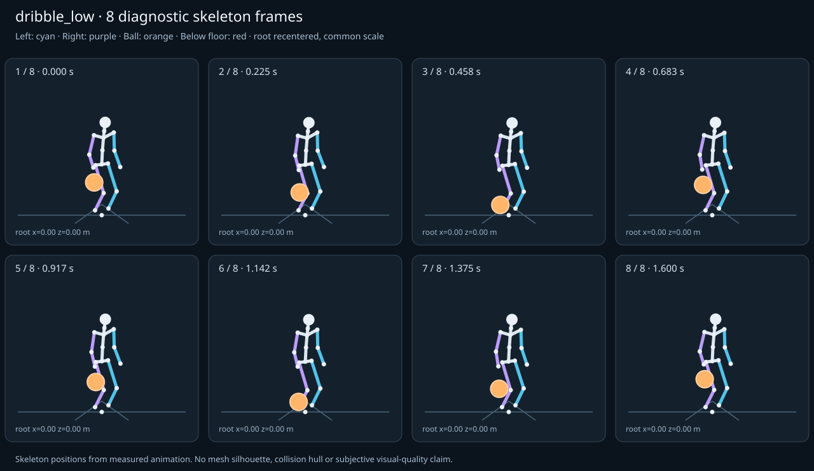

כל הקליפים · תצוגת התנועה · JSON מקורי
ציון 95.4 · כיסוי 100%
נתוני motion-qa-v1 המקוריים; עיצוב הדוח בלבד הותאם לחבילה. נקודות הסוליה נמדדות בתרחיש שחקן חיצוני מוצהר; Root בנכס נשאר קבוע.

| מדד | מצב | ערך | ציון | ראיות |
|---|---|---|---|---|
| החלקת רגליים | ירוק | 0 | 100 | ראיות המדידה{
"coordinateSpace": "native GLB plus explicitly declared external actor position and heading, applied once",
"supportSource": "declared",
"windows": 2,
"samples": 386,
"maxDriftMeters": 0.000001,
"p95SpeedMetersPerSecond": 0.000054,
"worst": {
"bone": "RightFoot",
"t": 0.883333,
"start": 0,
"end": 1.6,
"driftMeters": 0.000001
}
} |
| חדירה לרצפה | ירוק | 0 | 100 | ראיות המדידה{
"samples": 3860,
"floorY": 0,
"probeKind": "declared sole probes plus skeletal joint centers (no mesh surfaces)",
"maxDepthMeters": 0,
"worst": {
"t": 1.416667,
"bone": "LeftFoot",
"depthMeters": 0,
"y": 0
}
} |
| קפיצות פוזה | ירוק | 0.169772 | 96.6 | ראיות המדידה{
"adjacentPairs": 192,
"observations": 3264,
"maxDegrees60Hz": 2.546582,
"maxMarkerStepHeight60Hz": 0.005524,
"maxRootStepHeight60Hz": 0,
"worst": {
"ratio": 0.16977216533004744,
"t": 1.533333,
"previousTime": 1.525,
"bone": "RightForeArm",
"markerStepHeight60Hz": 0.002765,
"degrees60Hz": 2.546582
}
} |
| חריגות אנטומיות | ירוק | 0 | 100 | ראיות המדידה{
"testedFrames": 193,
"affectedFrames": 0,
"checks": 3281,
"maxLimbFlexionDegrees": 75.541403,
"maxRelativeSegmentLengthChange": 0,
"hingeDirectionChecked": true,
"axialTwistChecked": false,
"violations": []
} |
| מגע בכדור | ירוק | 0.000005 | 99.99 | ראיות המדידה{
"radiusMeters": 0.12,
"samples": 3,
"missed": [],
"contacts": [
{
"t": 0,
"bone": "RightHand",
"gapMeters": 0.000008,
"signedGapMeters": 0.000008,
"centerDistanceMeters": 0.120008,
"contactPoint": [
-0.29,
0.670008,
0.29
],
"ballCenter": [
-0.29,
0.55,
0.29
],
"declaredLocalPoint": true
},
{
"t": 0.8,
"bone": "RightHand",
"gapMeters": 0.000008,
"signedGapMeters": 0.000008,
"centerDistanceMeters": 0.120008,
"contactPoint": [
-0.29,
0.670008,
0.29
],
"ballCenter": [
-0.29,
0.55,
0.29
],
"declaredLocalPoint": true
},
{
"t": 1.6,
"bone": "RightHand",
"gapMeters": 0.000008,
"signedGapMeters": 0.000008,
"centerDistanceMeters": 0.120008,
"contactPoint": [
-0.29,
0.670008,
0.29
],
"ballCenter": [
-0.29,
0.55,
0.29
],
"declaredLocalPoint": true
}
],
"contactDetailsTruncated": false,
"coordinateSpace": "native GLB plus explicitly declared external actor position and heading, applied once"
} |
| כניסה ויציאה מול המתנה | צהוב | 2.05542 | 64.17 | ראיות המדידה{
"entry": {
"ratio": 2.0554197067332804,
"t": 0,
"idleTime": 3.833333,
"markers": 17,
"rmsPositionHeight": 0.082217,
"rmsRotationDegrees": 25.557203,
"rmsVelocityHeightPerSecond": 0.056962,
"velocityEvaluated": true
},
"exit": {
"ratio": 2.0554197075930705,
"t": 1.6,
"idleTime": 3.833333,
"markers": 17,
"rmsPositionHeight": 0.082217,
"rmsRotationDegrees": 25.557203,
"rmsVelocityHeightPerSecond": 0.04816,
"velocityEvaluated": true
},
"worstEndpoint": "exit",
"alignment": "horizontal root translation; raw asset poses used when provided"
} |
| מהירות גוף מול צעדים | לא חל | — | — | ראיות המדידה{} |
| סימטריה | ירוק | 0 | 100 | ראיות המדידה{
"mode": "structural",
"modeSource": "declared",
"structuralMismatch": 0,
"segments": [
{
"segment": "Arm-ForeArm",
"mismatch": 0
},
{
"segment": "ForeArm-Hand",
"mismatch": 0
},
{
"segment": "UpLeg-Leg",
"mismatch": 0
},
{
"segment": "Leg-Foot",
"mismatch": 0
}
],
"motionRmsHeight": null,
"worstMotion": null,
"bilateralPoseRmsHeightUnscored": 0.043807,
"note": "One-sided authored actions are checked for structural symmetry only."
} |